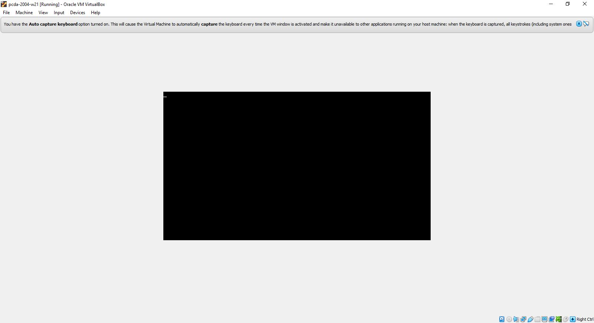

Software and pcda virtual machine¶
Warning
This section of the course website is very important. This course is filled with technology and as it’s an online course, you need to be well informed to make appropriate choices regarding the different software options as you’ll be responsible for your own computing environment. In addition to being programming based, this course requires you (and teaches you) to be able to install software, use the command line, and troubleshoot technical problems. If these kinds of things don’t appeal to you, this is NOT the course for you.
Technology requirements¶
In order to fully participate in this course you will need a Windows, Mac or Linux based computer (64 bit OS) with a minimum of 8Gb of RAM.
Course software - the big picture and options¶
There are three main computing based topics in this course:
Basic Linux use including the bash shell
Using R and R Studio for business analytics
Using Python for business analytics
I’m going to provide several options for obtaining the necessary software and setting up the necessary computing environment for each of these three main topics. As you’ll see, you will be able to pick and choose parts from the different resources depending on what makes the most sense for you given the type of computer you have and other factors that I’ll describe. In a nutshell, you’ll either install R and Python (and a few other things) in your base OS (i.e. Windows or Mac) or you’ll use a Linux based virtual machine that I’ve created which I’ll refer to as the “pcda VM”.
All the details are described next, but here’s a screencast as well. Note that this screencast is from last year but nothing has changed other than f23 becomes f24 and the VM is running a slightly older version of Lubuntu (which just means it looks a little different in the screencast).
SCREENCAST - Getting your computer setup for this course
Option 1 - Install R, R Studio, Anaconda Python and even a bash shell on your host OS¶
All of the R and Python related software we use in this course are multi-platform (and free) and will run on Mac, Windows or Linux. Even if you choose to use the pcda VM (discussed in a subsequent section, see About our pcda virtual machine), I still always recommend that students install R, R Studio and Anaconda Python on their Mac or Windows machine. I also provide scripts to install all of the necessary R and Python packages. Doing this gives you another way to access the software for the course and can be a lifesaver if the pcda VM is being problematic. All of the details on installing R and Python for Windows/Mac are further down on this page in the Installing course software in your base OS section.
Yes, you can do all of the R and Python parts of the course using the Mac or Windows OS. You can actually even do the Linux/bash part of the course in Windows/Mac, read on…
Using a bash shell with Windows/Mac - Option 1: git for Windows¶
I realized that there is another way to get a simple Linux bash shell working in Windows/Mac - install git for Windows. While git is included with most Linux distributions, we need to install it in Windows/Mac. When we do, you’ll see that we actually get a Linux bash shell that we use for running git commands. However, you can also use it to learn the basic bash stuff we learn in the pcda class such as cp, mkdir, wc, grep and other basic Linux commands. Installation instructions are in the Installing course software in your base OS section.
This gives you the added benefit of being able to learn and use git on Windows/Mac. For example, in my new Advanced Analytics with Python class we actually do everything in Windows and we use git for Windows. That course also has a detailed page on setting up your Windows/Mac machine for analytics work though it doesn’t include info on R and R Studio since we don’t use those in that course. As I mentioned previously, there are instructions below for installing those in Windows/Mac.
If you are interested in a high level description of exactly what git bash for Windows is, check out this post. You’ll learn about things like Cygwin and MSYS and mintty. A long time ago, I used Cygwin on Windows as my first introduction to using a POSIX OS on Windows.
Using a bash shell with Mac - Option 2: macOS is actually Unix based¶
Finally, for those of you using a Mac, you might not realize it, but the Mac OS is actually using a Unix based kernel. It comes with standard Unix command line tools and you could actually do the Linux intro part of this course using your Mac’s built in Terminal program that uses the zsh shell by default (though you can change it to bash if you want ).
Option 2 - The pcda virtual machine¶
Since the creation of this class in 2014, I have created a new virtual machine each year that runs Lubuntu Linux and includes R, R Studio, a bunch of R packages, Anaconda Python, a bunch of Python packages, and a few other programs such as a text editor and git (for version control). I distribute the virtual machine via an OVA file that students download and import using VirtualBox. Below, in About our pcda virtual machine, you’ll find extensive background information as well as installation, usage and troubleshooting instructions for the pcda VM.
The benefit of using the pcda VM is that all three computing topics: Linux, R, and Python can all be done on the VM and all of the software is ALREADY INSTALLED for you.
Another resource - the SBA open labs¶
The SBA open labs will also have R, R Studio, and the Anaconda Python distribution installed.
So, what should I do?¶
Since I started teaching this class in 2014, every single student has successfully gotten the pcda VM working on their machine. Most students also install R, R Studio and Anaconda Python on their Mac/Windows machine to have a second way of using the applications.
However, it is possible to do this entire class WITHOUT the VM via a combination of git for Windows (or the Mac Terminal) for the Linux/bash part of the course, and all of the R and Python based software that you install on your Windows or Mac machine. I think that this has probably become the most widely used option. All of the software is easy to install, you learn something by installing it, and you avoid some of the headaches that can pop up with a virtual machine.
It’s your decision. Figure out what works best for you and do it. Doing data science work in the real world involves these kinds of technical decisions all the time - get used to it.
The rest of this page has a HUGE amount of information on these various resources. We will start by learning how to install all the various pieces of software on your Windows or Mac machine.
After that is information on how to get the pcda VM working on your computer.
Installing course software in your base OS¶
One great advantage of the R and Python tools we use in this course is that they are all available for Windows, Mac and Linux. Installation of all of the course software is pretty straightforward and you’ll learn a lot by doing it.
git¶
To install git on Windows/Mac, go to https://git-scm.com/ and follow the instructions to download and install the appropriate version for your operating system. Here’s a screencast to walk you through the install and launching git bash from the Start Menu.
R¶
Go to the R Project site and follow the Download R link fo your operating system.
RStudio¶
Go to the RStudio site and install latest Windows (or Mac) open-source desktop version.
R packages for Windows or Mac or Linux¶
I’ve got an R script that installs most of the packages we’ll use this semester. These packages ARE ALREADY INSTALLED ON THE PCDA VM - THIS IS JUST FOR INSTALLING THEM IN WINDOWS OR MAC OR YOUR OWN UBUNTU SYSTEM. You can download the R script from here. Then
start R Studio
open the
downloaded install_r_packages.rfileif you’re feeling lucky, go ahead and run the entire script. Or run it a line at a time to install one package at a time.
Here’s a short screencast demoing the process.
P.S. I ran the whole script on one of my Windows machines and it successfully installed all the libraries in under 5 minutes. :)
Anaconda Python distro¶
We don’t start learning Python until about halfway through the course, so there’s not a huge rush to get Python installed. I encourage you to do it early and then you’ve got time to deal with any installation issues.
Ok, for this one you need to be careful you download the correct installer. You’ll be downloading the Individual Edition.
Click the big Download button and you’ll get taken to a section with the 64bit Windows installer (or Mac). Install it.
Once that’s done, you’ve got Anaconda Python installed and you can use it for the first week of class when we do a quick “peek ahead” at Python. Later in the semester when we start learning Python, there are a few more things you need to do. I’ll describe them now and I’ve created a screencast to help you. If you want, you can wait and do these things later but you’ll eventually need to do them if you want to use Windows or Mac versions of Anaconda Python for this course. Well…, actually nothing terrible will happen if you just use the base conda environment that is installed by default. But you really should start to learn about conda virtual environments if you are serious about using Python for analytics work. So, here we go with those additional steps needed to create and use a new conda virtual environment.
In order for Jupyter to recognize different conda virtual environments, you may need to install some extensions. Here’s a screencast that walks you through the next few steps.
Just start a open a Windows Anaconda Prompt shell (from the start menu) and do the following:
> conda create -n jupyter -c conda-forge jupyterlab nb_conda_kernels
You’ll only do this one time. This step actually does two things.
It creates a virtual environment called
jupyterthat we’ll use whenever we want to use Jupyter Lab.It installs the
nb_conda_kernelsextension into thejupytervirtual environment you just created.
From then on, Jupyter will be able to recognize different conda virtual environments. I’ll be showing you how to switch between conda virtual environments from within Jupyter Lab later in the course.
Now, you’ll create the datasci conda virtual environment.
download the datasci.yml file to your
Downloadsfolder.open a Windows Anaconda Prompt shell and navigate to your
Downloadsfolder.
Then do:
> conda env create -f datasci.yml
Then, anytime you want to install new packages into this datasci environment, you just activate it like this:
> conda activate datasci
Again, we will only do this if and when we need to install additional packages into our datasci conda environment. This isn’t something you need to worry about now. We’ll revisit this when we learn Python.
To deactivate a conda virtual environment you just do this:
> conda deactivate
When you want to use Jupyter lab, you first activate the jupyter environment and then launch Jupyter lab.
> conda activate jupyter
> jupyter lab
Then, once you are in Jupyter Lab, you can change the kernel to datasci.
Again, you do NOT absolutely have to create a virtual environment for this course for Jupyter and datasci. If
you want to use the base environment, you can. However,
at some point you need to learn about conda virtual environments and this is a good opportunity to do so.
Notepad++¶
This is a free text editor that has good support for regular expressions.
Go to the Notepad++ site and install it. For Mac, TextMate is one open source text editor you can freely obtain and there are others.
About our pcda virtual machine¶
We’ll be using a virtual machine running Lubuntu Linux via VirtualBox. Since virtual machines can become corrupted (just like USB sticks or hard drives) it is important that you use some cloud based storage location for your file backups. This could be your OU Google Drive account or Dropbox or some other cloud technology. There is more information about file backup strategies further down on this page.
Business schools tend to be Microsoft dominated places. After all, Excel is the “Swiss army knife” of business and Powerpoint is everywhere. However, the analytics world is a far more diverse place. I’m going to give you an opportunity to explore a wide range of new tools and computing environments. I want all of us to be able to work in the same computing environment whether we are in the lab or at home. So, I’ve created a virtual machine based “analytic appliance” that we’ll call pcda. The pcda appliance comes preconfigured with:
Lubuntu 20.04 - the operating system
Geany - a lightweight powerful text editor
R and R Studio and a whole bunch of R packages
Anaconda Scientific Python distribution version 3.x
Spyder - Python IDE that comes as part of the Anaconda Python distribution
A web browser, file manager, command shell, and other tools such as git (version control) and pandoc (file format converter)
Linux!? Yep, you are going to learn Linux. You may have heard of Ubuntu as it’s probably the most popular Linux “distro” out there for the average home user. Lubuntu is a lightweight version of Ubuntu that just has the minimal set of the Linux OS that we’ll need. While Lubuntu is GUI based, we will also be using the “shell” (like a Windows command line but a jillion times better and more powerful). Lubuntu (and Ubuntu) are both free and open source.
Both R and Python are free and open source products with huge communities of analytics users and contributors. They overlap to some degree but have distinct strengths. Both are well worth learning. They both allow you to do things that would be absolutely hideous and painful to do in Excel. The pcda appliance was created with VirtualBox, a free software package from Oracle for creating and using virtual machines. I’ll be showing you how you will install and use it on your own computer.
Note
Start this process early so that you have plenty of time for troubleshooting before the class really gets going. The ova file and instructions have been available since mid-August. If you wait until the last second to do things (in this class or IRL work), then technical problems can easily cause you plenty of grief. Telling a client that you couldn’t get their work done because you waited until the last second to find out that there was some problem with the data file they sent you is not a great way to become a successful analyst.
Obtaining and installing the pcda virtual machine¶
The big picture is that you’ll be:
downloading a compressed archive (an OVA file) of our pcda virtual machine (VM) that I’ve created
downloading and installing VirtualBox
importing the compressed archive (the OVA file) into VirtualBox which will turn it into the actual VM
launching the pcda VM from VirtualBox
using the pcda VM to do your work for this class
I’ve provided the Installation Guide as a Google Doc so that you can make a copy and add your own notes to it if you wish. This is your first step in this course of becoming a more tech savvy business analytics professional. There will be many challenges and hiccups. Learning how to overcome these challenges is an important part of this course and your professional development. Roll up your sleeves and make it work. Of course, I am here to help.
The following Installation Guide is from several years ago. Obviously, the filename and file size have changed. But, the steps are the same. The OVA file for this year is called pcda-2204-f24.ova and has a file size of 13,476,107 kilobytes in Windows (just under 13.5Gb).
I’ve made a few screencasts to supplement the Installation Guide. These were made last year so some of the details such as the machine name will obviously be different:
The first thing to do is the download the following OVA file:
Warning
pcda-2204-f24.ova is a BIG file (~13.5 Gb). You’ll only be downloading it one time to your computer and then importing it into VirtualBox. Use Chrome or Firefox. The file size is 13,476,107 Kb on my Windows hard drive. Oddly, the Mac computes file sizes slightly differently and according to one student who installed pcda on his MacBook Pro. If you don’t know anything about files sizes and how to view such things in Windows or the Mac, you might want to rethink taking this class. :)
Download pcda-2204-f24.ova file to your computer
I’ve moved link to our course Moodle site (right near the top)
This is the “open virtual appliance” file that can be imported into VirtualBox on your computer to create the pcda virtual machine. I’m hosting the file itself in Google Drive and using a shareable link to make it accessible to you. OVA files are essentially a packaged archive of OVF (open virtualization format) files - a standard file format for packaging and distributing virtual machines. Here’s a nice quick explanation of OVA and OVF files.
After getting this file successfully downloaded, just follow the steps in the Installation Guide.
If you are interested in how I created the virtual appliance itself, I’ve got a document I can share that I created with all my notes for recreating it. If you are interested, here’s a short article that gives a good overview of virtual machines and VirtualBox.
Troubleshooting Guide and effectively using the pcda virtual machine¶
This class has used a Lubuntu based virtual machine since the first class ran in 2014. There are a few common issues that tend to pop up for a few people. If you run across something else, please make a post in the General Q&A Forum in Moodle. Before making a post to the Q&A Forum, you should:
Look in this Troubleshooting Guide to see if you question is already addressed here.
Look through the course Q&A Forum to see if someone else has already encountered and solved your problem. Thank them with a reply to their post if this is the case.
Thoroughly research the problem yourself. Take screenshots of error messages. Googling key parts of error messages is often a great way to start finding information that can lead to a solution. Take notes on exactly what you have tried and what the results were. Try to fix things for yourself.
If after all of this, you still have not solved your problem, then make a post to the Q&A Forum. Again, include information such as screenshots of error dialogs and things you’ve already tried to do to solve the problem yourself. People (your classmates and me) will be helpful but you must first try to solve things for yourself. Immediately posting a question before doing so is asking others to spend their time doing something for which you have not first spent your time. You’ll see that we’ll be using resources like StackOverflow in this course and you will learn what well formed questions and requests for help look like. You will also see what poorly asked questions will look like and what the responses to such questions look like.
VM won’t start - Make sure the ova file downloaded correctly¶
If after importing the pcda-2204-f24.ova file, the virtual machine won’t start up correctly and you get an error dialog in Virtual Box saying it cannot start the VM, the VERY FIRST thing to check is if the ova file actually downloaded correctly. It’s a BIG file. When downloading big files, sometimes they get corrupted. Browse to the folder on your host machine containing the downloaded ova file. The file size is 13,476,107 Kb on my Windows hard drive. Oddly, the Mac computes file sizes slightly differently and according to one student who installed pcda on his MacBook Pro, the Mac reports the file size as being slightly different.
VM hangs with black screen at startup¶
First of all, be patient.
Sometimes, for whatever reason, startup may take a few minutes. If after several minutes you still are looking at a black rectangle, go to the VirtualBox Machine menu (at top of screen) and try the Reset option of the send ACPI Shutdown option. Sometimes after doing this, when the machine restarts, you may see what is known as a black screen with a few options. This is the “GRUB menu” and is a way to start the system in various modes (similar to Safe Mode in Windows).
Usually you can just hit the Enter key to take the top option, which is a standard Ubuntu startup.
VT-x/AMD-V Hardware Accelerator Issue¶
If on trying to start the pcda VM, you get an error saying that hardware acceleration is not available on your system and the VM will not start, then you will need to make a BIOS change to enable hardware acceleration. Here’s a good YouTube vid that shows how to do this. OBVIOUSLY, there are some things in the video that are specific to the person who made the video (such as which keys are needed to be pressed to enter the BIOS Setup on startup and how to make the necessary BIOS changes). It’s a good idea to do some Googling and look for guidance on using VMs on your specific make and model of computer.
Warning
Making BIOS changes can really mess up your machine, so be very careful when doing this. Only make the change shown and document exactly you did so that you can undo it if necessary.
Shutting down the pcda VM¶
When you are ready to stop working with the pcda VM, you ALWAYS should shut it down by clicking the little blue “start” button in lower left corner, select Leave | Shutdown. Then let the VM shut down. Then you can quit VirtualBox. This minimizes chances of your corrupting the virtual machine. Of course, bad stuff can always happen and that’s why you MUST have a file backup strategy. See syllabus and below for various options on that.
Doing Lubuntu updates from the command line¶
Periodically, when you start up the pcda VM, a little dialog box will pop up saying that there are system updates to do. You have the option of installing them now or clicking the Later button. These are just like the Windows or Mac update messages one might get when using those OS’s. Yes, you should do these updates. However, every once in a while, after clicking the Install button, the updates will fail and if you read the messages in the dialog box it will often be some type of failure to fetch the required packages. It sometimes seems like the update manager doesn’t think you’re connected to the internet - but you are. When this happens, we simply need to launch the update manager from the command line. This is easy to do and something every Linux user should know how to do.
A really nice, simple, tutorial on doing this is available at https://www.makeuseof.com/update-ubuntu-command-line/ (which I found from Googling “ubuntu update command line”). Here’s a short screencast I made that demos the process.
Frozen apps and frozen VM¶
When using a virtual machine (or actually any computer), it’s almost certain that at some point, either an application or the entire virtual machine will “freeze” or become unresponsive. What do you do? Here’s a few tips and there’s a screencast at the bottom of this section demoing some of them.
Frozen Linux application¶
If an application seems to no longer be responding:
Open a terminal window (i.e. a bash shell).
Type xkill at the prompt and hit return.
You’ll get a message telling you to click on the frozen application window.
Click on the frozen application window. Frozen application will be killed.
How did I figure this out? I went to one of my Google machines and searched “linux frozen application what do i do”. Top hit is this link with a very promising name.
https://www.makeuseof.com/tag/6-different-ways-to-end-unresponsive-programs-in-linux/
Frozen virtual machine in VirtualBox¶
If the entire virtual machine seems to be not responding:
In the VirtualBox menu at very top of the screen, select File | Close. You’ll get a little dialog box with three options. Use the “question mark” button to see what each of the options does. Usually you’ll try Option #2 “Send the shutdown signal”. If that doesn’t work, use Option #3, “Power off the machine”.
You can get to the same three options by right clicking on the virtual machine icon in the VirtualBox interface and selecting close from there.
Screencast demoing frozen app and frozen VM fixes¶
Strange looking screen on startup¶
Sometimes, especially after having to do a forced shutdown (as above), the next time you start up the VM, you’ll see a basic dark startup screen with various options. This is the “GRUB menu” and is a way to start the system in various modes (similar to Safe Mode in Windows). Usually you can just hit the Enter key to take the top option, which is a standard Ubuntu startup.
Downloading and extracting compressed files¶
When downloading tar.gz files for class, make sure you actually do a
Save File and let it download to your Downloads folder. Then right
click the file and Extract Here. Do NOT open the file with Archive
Manager during the download and then try to access files within without
extracting - this is just like trying to work inside of a zip file in
Windows. DON’T DO IT. Always download the tar.gz file and extract before
trying to use any files. Obviously after extraction, you can move the
resulting folder where ever you’d like.
Emptying trash on pcda VM¶
When I created the pcda VM, I gave it a max size of about 25Gb. To free up unused space, you should periodically empty the Trash of deleted files. Just right click on the Trash Can item in the File Manager and select the Empty option.
Managing RAM and CPUs on the pcda VM¶
When I built the pcda VM, I allocated 3.5Gb of RAM to it and it uses 1 CPU (remember, you can see all the system settings by clicking the big orange cog in the VirtualBox manager GUI). So, if you’ve got tons of apps open in the VM, you might start to bog things down. So, be smart about closing apps when you aren’t using them. Also, don’t have a bunch of apps open in the host operation system (i.e. Windows or Mac). Especially, don’t have a ton of tabs open in a browser in the host OS.
You can actually change the amount of RAM allocated to the VM, dynamically. If you’ve got a ton of RAM on your machine and want to allocate more RAM to the VM, feel free to try it. You can also increase the number of CPUs from 1 to 2. These changes can definitely improve performance of the VM.
Interpreting bash code snippets¶
In many places in my notes and in countless online examples, the $ to the left of any bash command is NOT part of the
command. It’s just representing the bash shell prompt. For example:
$ ls -l -a
The command and its associated flags is just the ls -l -a part. The
$ is representing a generic bash prompt.
Managing your files¶
The bottom line is that you are responsible for your files. Figure out a file management and backup strategy that works for you. You should always have a backup of important files. Here are a few options for getting files from the pcda VM to some other location:
- Compress working folder as a
ziportar.gzfile and do something like:
copy to your Google drive or some other cloud based storage location (e.g. Dropbox)
email it to yourself
copy to a USB drive. To use a USB drive with VirtualBox, just stick the drive in and use the Devices menu to mount the USB device. Remember, USB devices do fail.
Use a “shared folder” - see below for instructions on doing this
For lab based versions of the course when you are doing work on the pcda VM on a lab machine, obviously, all files you create are only on that machine. You have many options for how you get those files to some other place so that you can access them later. You decide what works best for you. Of course if you just bring your laptop to class and use the pcda VM on there, you still need to create a backup strategy using one of the methods above or some other scheme you concoct.
Finally, when we learn to use git and Github, you’ll see that not only does this provide version control on your source code files, it also gives you another place that source code files are backed up. It is yet another reason to learn to use version control software.
Weird cursor problem in R Studio¶
If ever you find that the cursor in R Studio seems to be not synchronized with where you are typing, it’s caused by a strange bug having to do with certain fonts in their editor. The easy fix is:
In R Studio, go into Tools | Global Options and then select Appearance from the left toolbar in that window. Then, make sure you set the font back to Ubuntu Monospace and the cursor problem will go away. For some reason, sometimes the font gets switched to Courier (or you might change it by selecting a different theme).